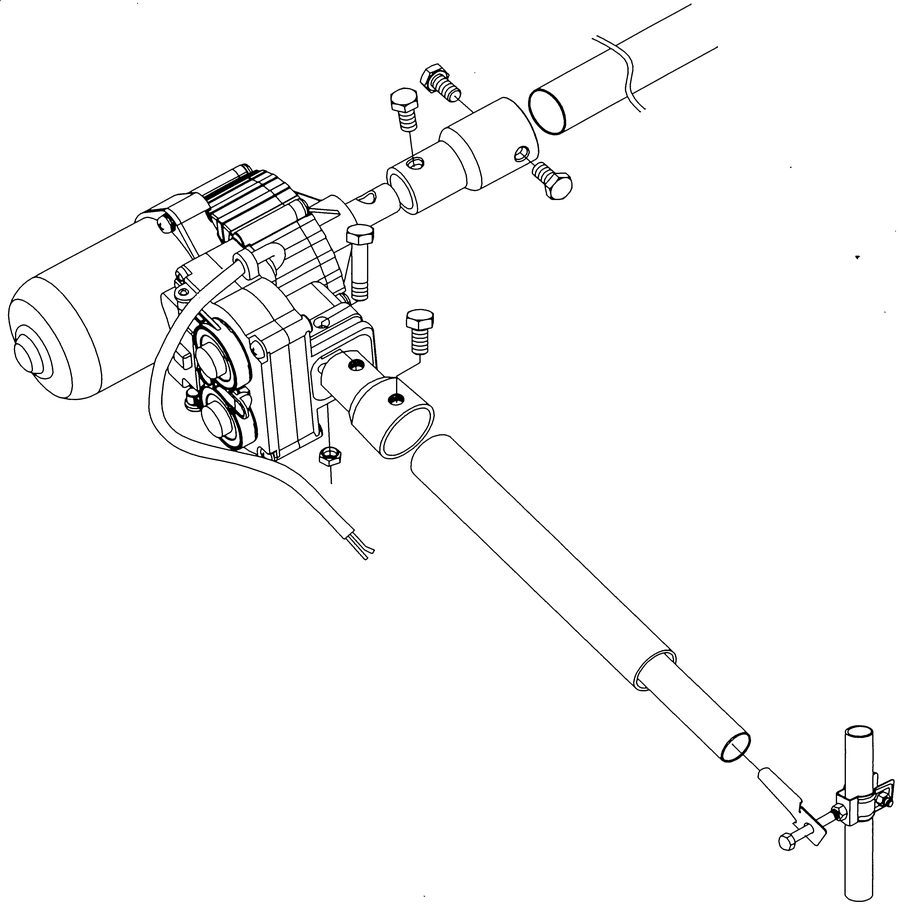
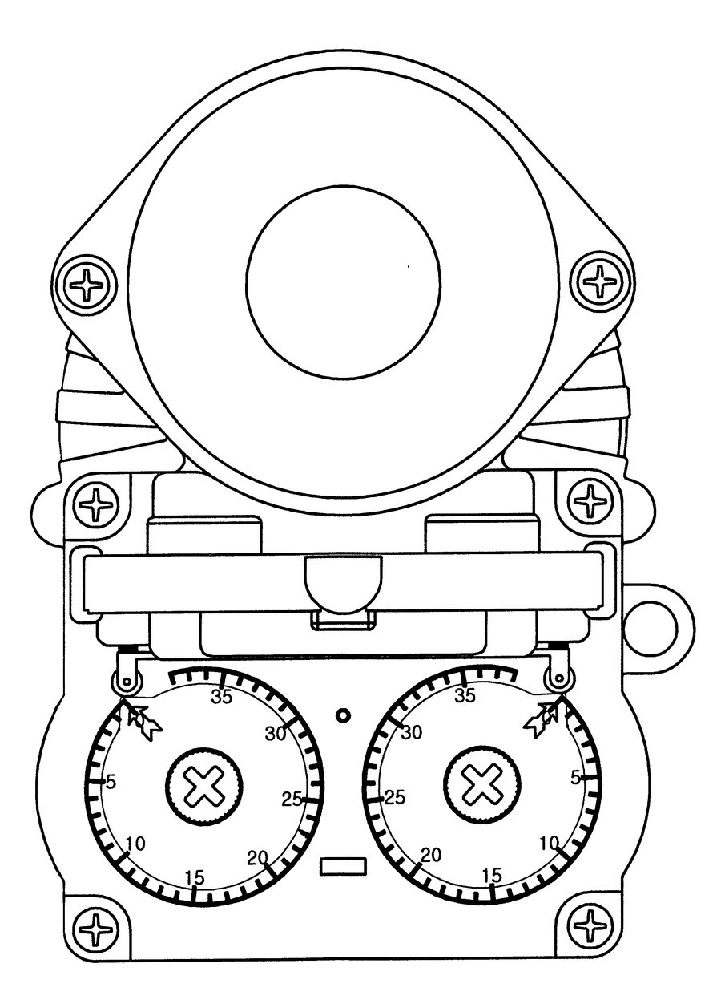
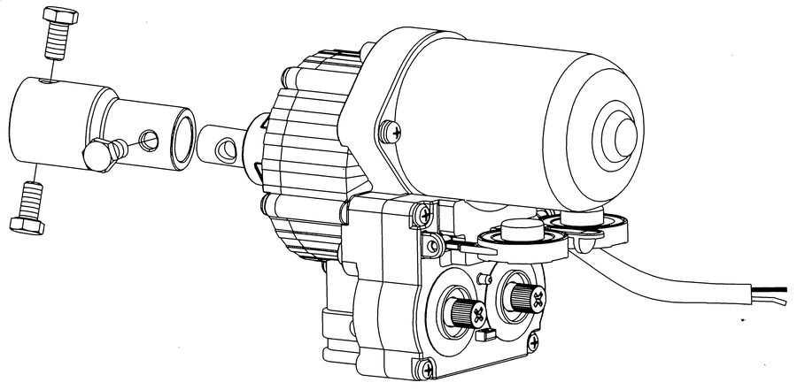
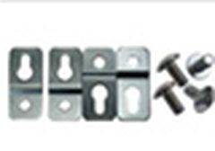
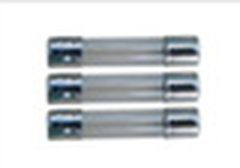
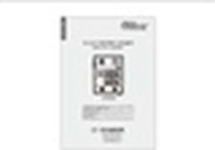
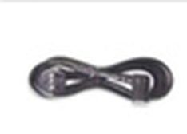

롤·업·다운 방식 DC24V 전동개폐기 · 헤리컬 & 유성기어 2단 감속 · 전 10모델
| 모델 | 표준 토크 | 최대 토크 | 리미트 | 무게 |
|---|

피복재 상단을 구조물에 고정하고 하단을 개폐축에 감아 클립으로 고정합니다. 개폐축을 회전시키면 피복재가 감기며 열리고, 반대로 회전시키면 풀리며 닫힙니다.

전기가 계속 공급되어도 설정한 회전수에 도달하면 스스로 정지합니다. 열림 회전수를 설정하면 닫힘 회전수가 같은 값으로 자동 설정됩니다(열림높이 = 닫힘높이).





(주)우성하이텍 · 경남 양산시 동면 양산대로 446 · TEL 055-365-8801 · www.wsh.co.kr
제원은 제조사 사용설명서를 기준으로 작성되었습니다. 사양은 사전 예고 없이 변경될 수 있습니다.